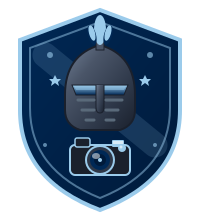

Option 1: Classic Badge
A circular badge design featuring a detailed knight helmet with a professional camera overlay. Subtle "FA" initials integrated into the design. Elegant and refined.
Option 2: Comic Fun
A playful, cartoon-style knight character holding a camera! Features cute eyes, bouncy plume feathers, and action sparkles. Perfect for a fun, kid-friendly vibe.
Option 3: Shield Crest

A traditional shield/crest design with knight helmet on top and camera below. Classic heraldic style meets modern photography. Prestigious and bold.